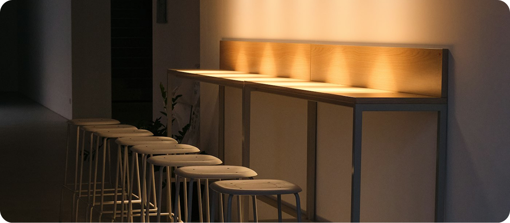

Sobre Kairo
Diseño como acto
de claridad.
KAIRO nació de una convicción simple: que el buen diseño no grita, comunica. Que la elegancia es la ausencia de lo innecesario.
Somos un estudio de diseño digital especializado en branding, interfaces y dirección creativa. Trabajamos con marcas que entienden que la forma es fondo, y que cada detalle importa.

Filosofia
Creemos que el diseño es una forma de pensar, no solo de hacer. Que la función y la estética no se contraponen, sino que se exigen mutuamente.
Cada proyecto que abordamos comienza con preguntas, no con respuestas. Cuestionamos lo establecido, reducimos lo complejo y buscamos la solución más elegante posible. El resultado debe sentirse inevitable, como si no pudiera haber sido de otra manera.
Valores
Precision
Cada decisión de diseño tiene una razón de ser. No hay elementos decorativos sin propósito, ni soluciones sin análisis previo.
Simplicidad
Quitamos todo lo que no aporta. Lo que queda debe ser perfecto. La reducción es la forma más elevada del diseño.
Durabilidad
Creamos identidades y sistemas visuales pensados para resistir el tiempo, no para seguir tendencias pasajeras.
Un estudio pequeño por elección, profundo por convicción.
Mantenemos un equipo reducido para garantizar que cada proyecto recibe la atención que merece. Menos proyectos. Más compromiso.